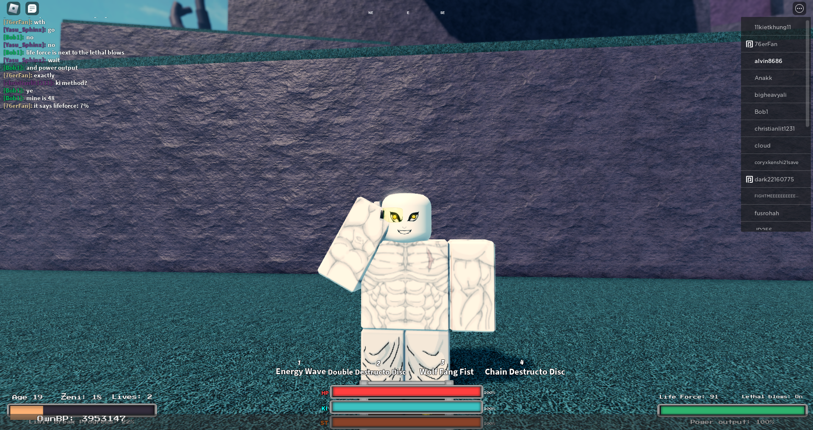

Hi, I'm Alvin a programmer a developer a designer .
About Me
I am a passionate and driven computer science student at the University of Texas At Dallas. I have a strong foundation in software development, algorithms, and data structures. My goal is to leverage technology to build innovative solutions for real-world problems. I'm currently seeking internship opportunities where I can contribute and grow.
Ongoing Projects
Here are some projects that I am currently working on/will work on soon
Crypto/Stock trading bot
I will create a cryto/stock trading bot that uses various technical indicators to make buy and sell decisions. The bot will be able to trade on multiple exchanges and will be able to handle multiple assets.(CURRENTLY TESTING USING PAPER/FAKE TRADING)
Finished Projects
Stock and finances tracker
This Java Swing financial tracker lets you manage your money by logging expenses, setting budgets, and visualizing spending with dynamic bar charts.The app also features a stock tracker using the Polygon.io API and an AI assistant powered by Google's Gemini API for financial questions. It's a comprehensive tool for understanding your finances.
Roblox games
On Roblox I have created simple games like obbys and fighting games using the roblox scripting language luau. This helped strengthen my understanding of object oriented programming by giving me a visual understanding of my code when I created parts and used scripts in them